for i in range(steps):
loss = compute_loss(model, training_data)
loss.backward()
optimizer.step()
optimizer.zero_grad()
valid_loss = compute_loss(model, training_data)
if valid_loss > valid_losses[-1]:
break
valid_losses.append(valid_loss)Lecture 8: Regularization
Playground
Try out the concepts from this lecture in the Neural Network Playground!
Choosing Hyperparameters
In the last lecture we looked at how to make choices about our network such as: the number of layers, the number of neurons in each layer and the learning rate. We’ve seen that we can use the gradient descent algorithm to choose the values of the low-level parameters of our model ( e.g. \(\mathbf{w}\) and \(b\) ). We call high level choices like the number of layers and learning rate hyperparameters. There isn’t strictly an algorithm for making these choices, typically we need to make some reasonable choices, train the model with gradient descent and then evaluate the performance of our model.
Train-test splits
As we’ve seen previously to get an unbiased estimate of how well our model will perform on new data, it is good practice to hold-out a test set of data that we will not use to train our model with gradient descent. Instead we will fit our model on the remaining data (the training set) and then compute the loss (or other metrics like accuracy) on the test set, using this as an estimate of the performance of our model.
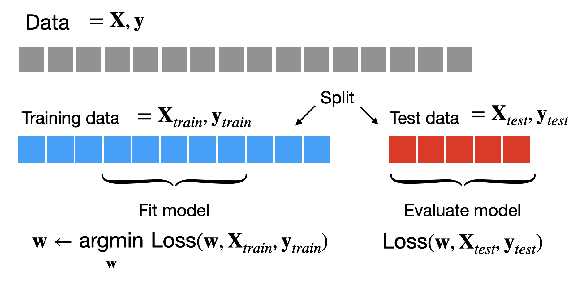
Train-validation-test splits
If our test loss isn’t very good we may decide that we want to change our hyperparameters and train the model again. We could keep doing this over and over until we get a test loss that we’re satisfied with. However, as soon as we use the test data to make choices about our model, the test loss we’ll no longer be an unbiased estimate of the performance of our model on new data! After all, we’ve now used it to fit our model. This isn’t ideal as we will no longer have a reliable estimate for the true performance of our model.
A simple approach to addressing this is to split our data into 3 parts: a training set that we’ll use for gradient descent, a test set that we’ll use for evaluating our model, and a validation set that we’ll use for choosing hyperparameters. When we run gradient descent, we can hold out both the test and validation sets, but we’ll allow ourselves to use the performance on the validation set (the validation loss) to choose hyperparameters. The test set we’ll reserve for the very end, when we’ve definitively chosen our model and need to estimate how well it will do. At a high-level the process looks like this:
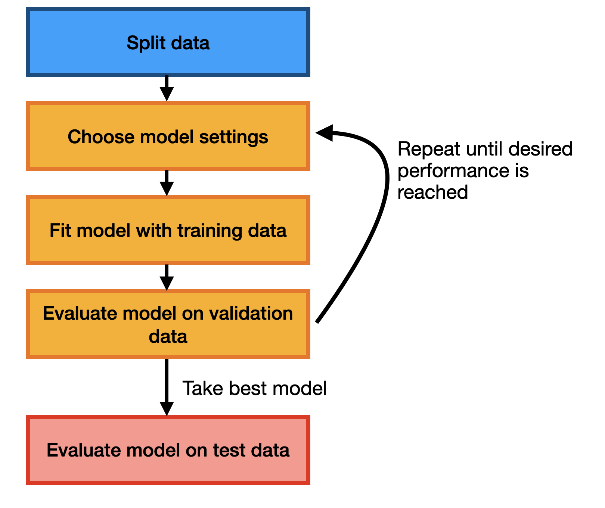
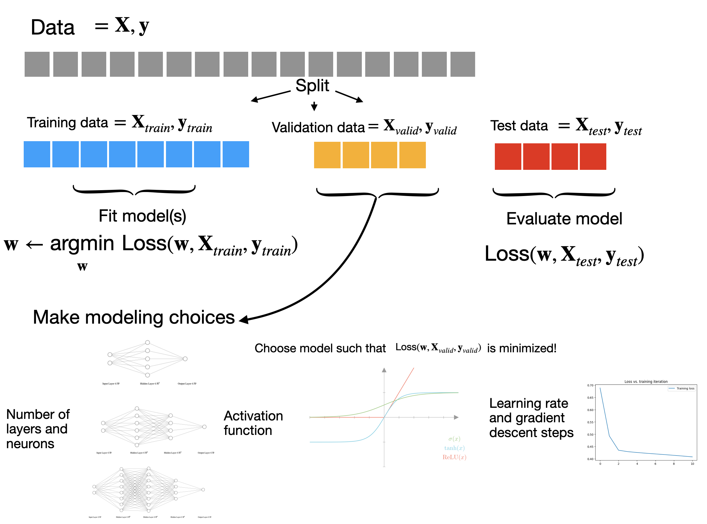
Cross-validation
An alternative approach is multiple splits of the same training data. Rather than partitioning our training set into distinct training and validation sets, we can divide our training set into \(K\) groups called folds.
To evaluate the performance of a given hyperparameter setting we can train our model multiple times, each time holding out a different group as the validation set. This gives us \(K\) estimates of the performance of a given choice of hyperparameters.
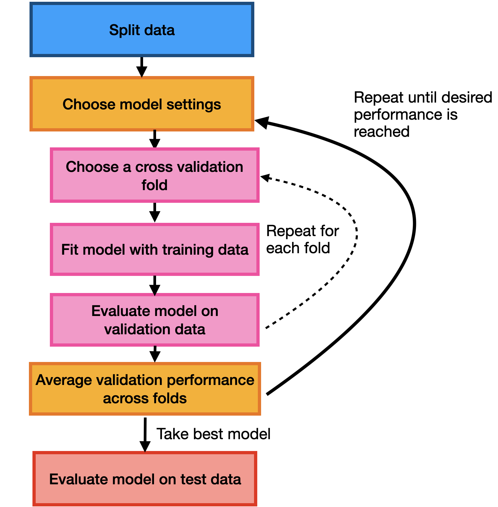
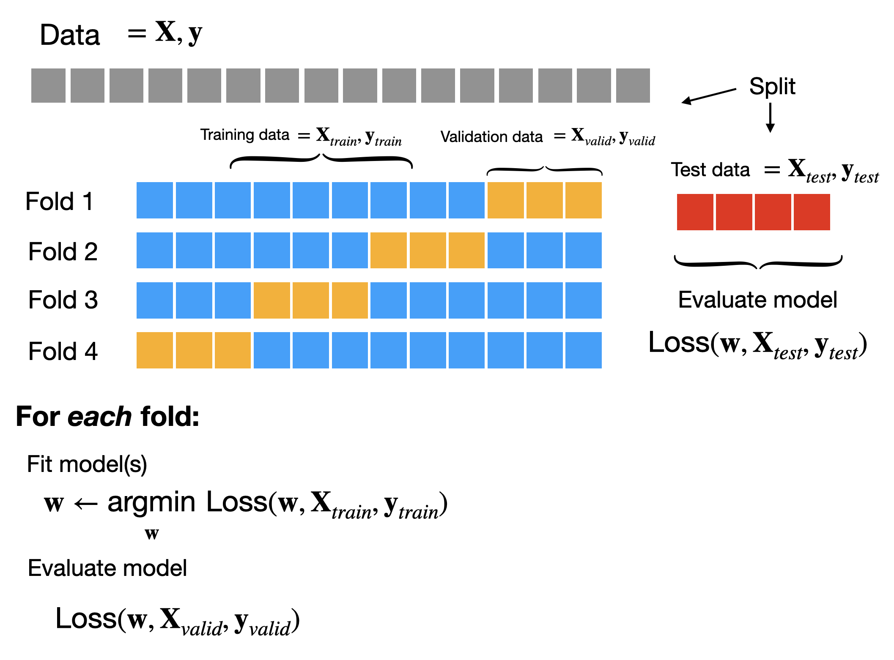
Cross-validation can be a more reliable way to choose hyperparameters at the expense of needing to retrain to model \(K\) times, which can be computationally expensive.
Overfitting and underfitting
There’s two possible reasons that a model might perform poorly on validation or test data (assuming gradient descent works well).
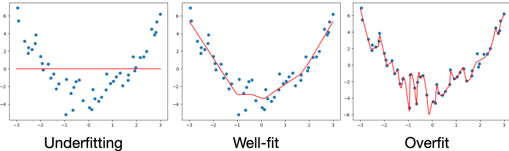
Underfitting occurs when our model is too simple to capture the data we’re trying to model. For example, if we try to fit a linear model to U-shaped data we see that the model can never fit the data well. We can identify underfitting when both the training and validation/test loss will be poor.
Overfitting occurs when our prediction function is too complex. In this case the model may capture all of the small variations present in the training data even when these variations are simply due to noise or poor measurements, thus may not be reflected in held-out data. A better approach would be to model these variations as uncertainty rather than variations in the prediction function. We can identify overfitting when the training loss is good, but the validation/loss is poor.
If we think about plotting our training and validation loss as a function of the complexity of our model, we might see underfitting when the model is very simple and overfitting when the model is very complex. The idea model would be right in the middle when the validation loss is at its minimum.
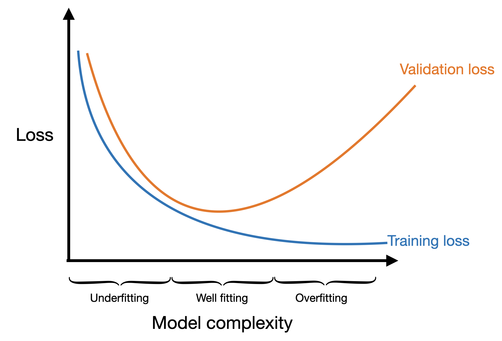
In this case model complexity could mean several different things:
Number of layers
Number of neurons per layer
Activation functions
Explicit feature transforms applied
Let’s look at a specific example where we’ll fit 3 neural networks of different levels of complexity on the same data:
Underfit model
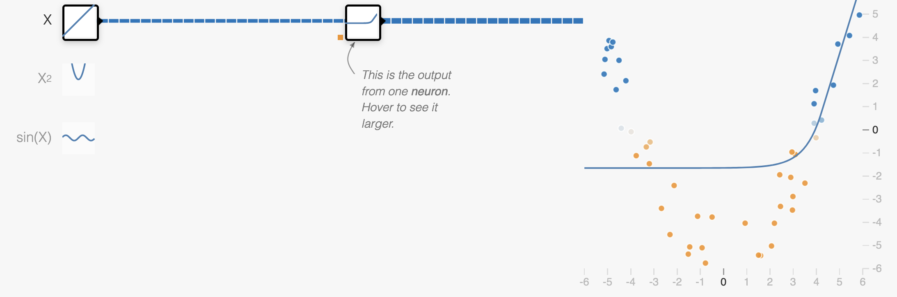
Well-fit model
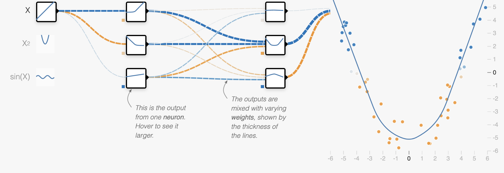
Overfit model
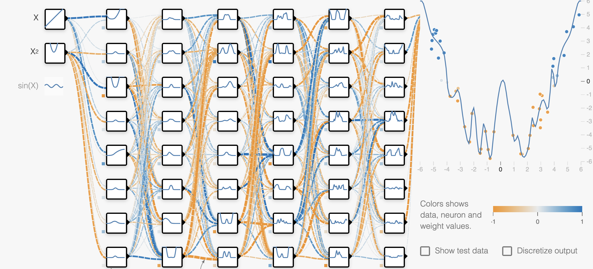
If we take a closer look at the overfit model, we can see that it actually fits the training data almost perfectly, but if we add more data from the same dataset, the performance looks much worse.
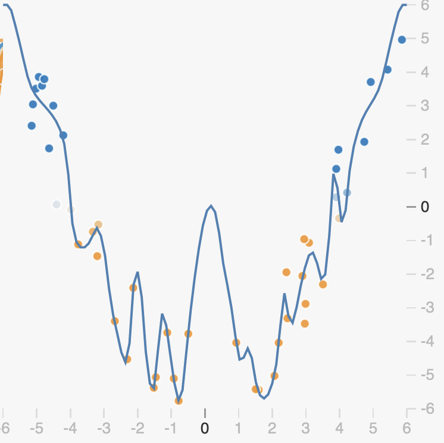
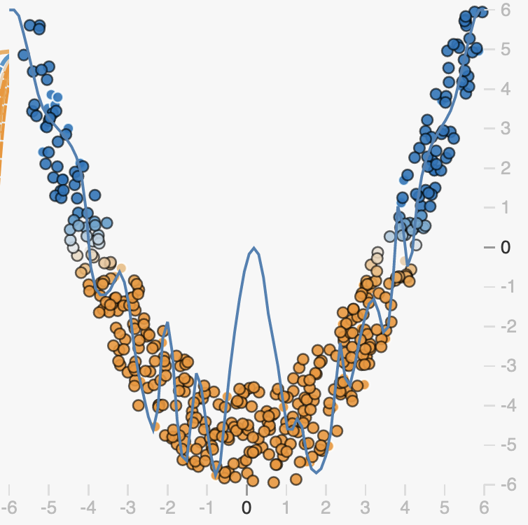
Early Stopping
Tracking validation loss
A common tool for quickly identifying poor performance is to track both the training and validation loss as we perform gradient descent. Doing this can let us see in real time if our model is underfitting or overfitting.
If we take a look a this type of plot from real neural network we see something interesting: the plot looks almost exactly like the model complexity plot we saw above.
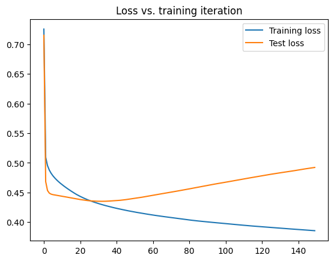
Early in training both the training both the training and validation loss are improving, suggesting that at first the model is underfitting. After a while the training loss continues to improve, but the validation loss starts to get worse, suggesting that the model is beginning to overfit.
Early stopping
The plot above suggests a simple strategy for preventing overfitting: simply stop gradient descent when the validation loss begins to increase! We call this approach early stopping.
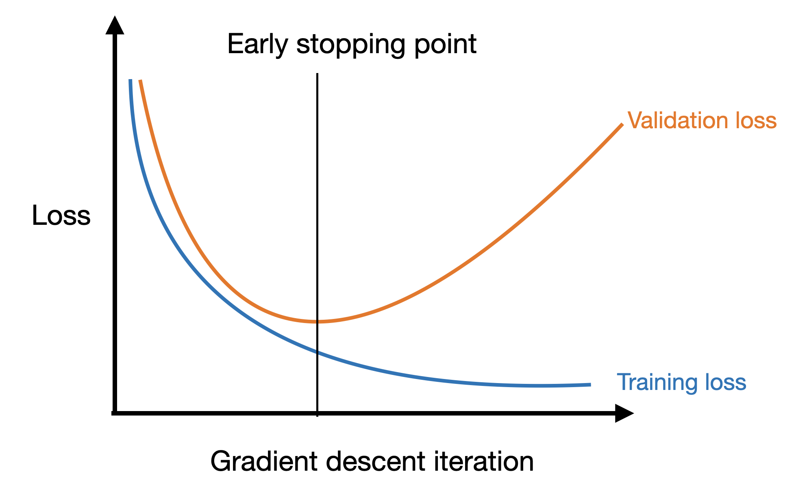
We saw a simple way to implement this in the previous lecture: if the current validation loss is larger than the previous one, stop training.
In the real world, the loss can be noisy:
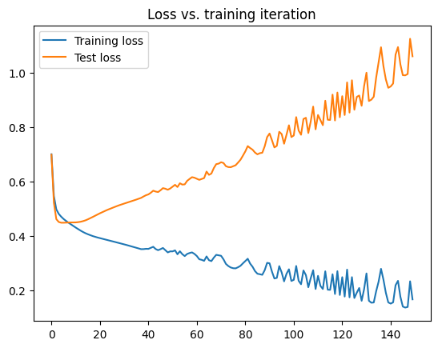
So it may not make sense to stop the first time the validation loss increases. A common strategy to apply a more patient form of early stopping. In the case we stop if the validation loss hasn’t improved for some specified number of steps:
patience = 5 # Number of steps to wait before stopping
steps_since_improvement = 0 # Steps since validation loss improved
min_loss = 1e8 # Minimum loss seen so far (start large)
for i in range(steps):
...
valid_loss = compute_loss(model, training_data)
# If the validation loss improves reset the counter
if valid_loss < min_loss:
steps_since_improvement = 0
min_loss = valid_loss
# Otherwise increment the counter
else:
steps_since_improvement += 1
# If its been patience steps since the last improvement, stop
if steps_since_improvement == patience:
breakLoss-based regularization
Thus far we have thought about combating overfitting by either restricting our prediction function or reducing the number of gradient descent steps we use to optimize the loss. In principal though, neither of these choices should be a problem. After all, while a simple function cannot approximate a complex function, a complex function should easily be able to approximate a simple one.
This raises the question: if the answer we’re looking for isn’t actually the one that minimizes our loss, are we actually minimizing the right loss?
L2 Regularization
One way that overfitting can manifest is as a prediction function that is overly sensitive to small changes in the input. We can see this in examples like the one below.

Here in the overfit case, our prediction function is trying to capture the noise of the data rather than just the overall trend. This is explicitly encouraged by losses like the mean squared-error loss, as the loss says fit every observation as closely as possible:
\[\textbf{MSE}(\mathbf{X}, \mathbf{y}, \mathbf{w}) = \frac{1}{N} \sum_{i=1}^N ((f(\mathbf{x}_i, \mathbf{w}) - y_i)^2)\]
When our prediction function \(f\) is complex enough, it can exactly capture variations due to noise in the training data. As we can see, this means that the function must be very non-smooth, small changes in the input correspond to big changes in the output as we can clearly see in the marked region. This means that the function in this region has a very large slope.
How does this observation help us think about regularization? Well, we know that the weights of our model control the slope of the function; large weights correspond to large slopes. Therefore if we want to ensure our prediction function is smooth, we need to make sure that the weights are not too large.
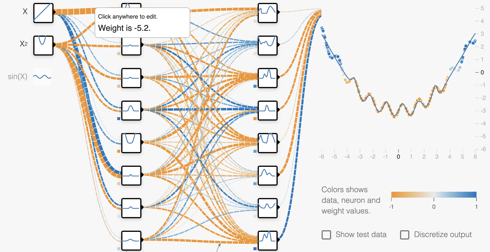
An overfit network will have large weights to encode large slopes.
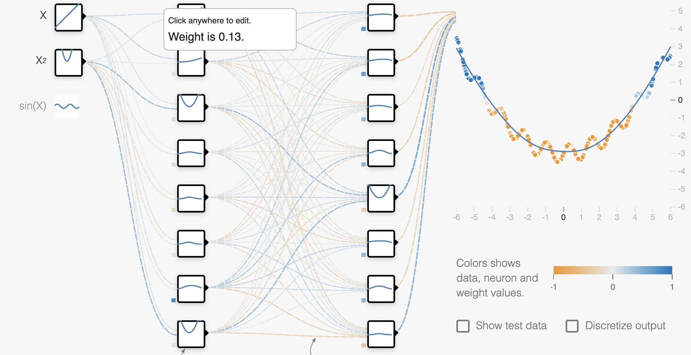
A regularized network will have smaller weights encoding a smooth function.
We can account for this in our loss function by adding a loss that encourages our weights to be close to 0. One such loss is the L2 loss. For a given weight vector \(\mathbf{w}\) the L2 loss is simply the squared 2-norm of the vector: \[\textbf{L}_2(\mathbf{w}) = \|\mathbf{w}\|_2^2 = \sum_{i=1}^d w_i^2\]
If we have a weight matrix \(\mathbf{W}\) as in neural networks or multinomial logistic regression the L2 loss is just the squared matrix 2-norm, which is again simply the sum of every element squared. For a \(d \times e\) weight matrix \(\mathbf{W}\) the L2 loss is:
\[\textbf{L}_2(\mathbf{W}) = \|\mathbf{W}\|_2^2 = \sum_{i=1}^d\sum_{j=1}^e w_{ij}^2\]
We can then train our model with a combination of losses. For example, if we’re training a regression model we could use:
\[\textbf{Loss}(\mathbf{X}, \mathbf{y}, \mathbf{w}) = \textbf{MSE}(\mathbf{X}, \mathbf{y}, \mathbf{w}) + \lambda \textbf{L}_2(\mathbf{w})\]
Here \(\lambda\) is a value that we can choose to trade off between these two losses. Too high a value for \(\lambda\) and we might end up with a value that is too smooth or just flat, too low and or L2 loss might not affect our result at all.
L2 Regularization for neural networks
If we are dealing with a neural network model, we may actually have many weight vectors and matrices. For example in a 4 hidden-layer network with sigmoid activations we have a prediction function that looks like: \[f(\mathbf{x}, \mathbf{w}_0,...) = \sigma( \sigma( \sigma( \sigma( \mathbf{x^T} \mathbf{W}_4)^T \mathbf{W}_3)^T \mathbf{W}_2)^T \mathbf{W}_1)^T \mathbf{w}_0\]
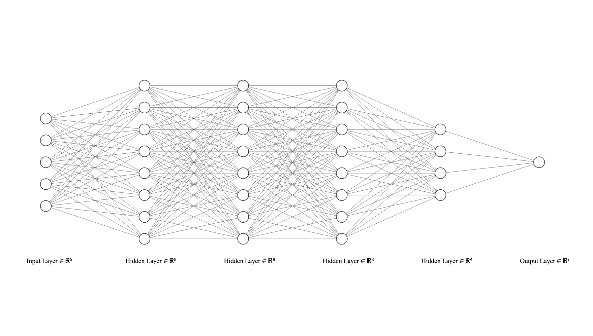
In this case, we can simply add up the L2 loss for every weight. For a network with \(L\) hidden layers the L2 loss would simply be: \[\textbf{L}_2(\mathbf{w}_0, \mathbf{W}_1,...,\mathbf{W}_L) = \sum_{l=0}^L\|\mathbf{W}_l\|_2^2\]
In practice most networks also incorporate bias terms, so each linear function in our network can be written as:
\[ \mathbf{x}^T\mathbf{W} + \mathbf{b} \]
And the full prediction function for a sigmoid-activation network might be:
\[f(\mathbf{x}, \mathbf{w}_0,...) = \sigma( \sigma( \sigma( \sigma( \mathbf{x^T} \mathbf{W}_4 + \mathbf{b}_4)^T \mathbf{W}_3 + \mathbf{b}_3)^T \mathbf{W}_2 + \mathbf{b}_2)^T \mathbf{W}_1 + \mathbf{b}_1)^T \mathbf{w}_0 + \mathbf{b}_0\]
Each of these biases is a constant offset and does not affect the slope of the function or how quickly the output changes with small changes in the input. This means that the bias terms do not contribute to overfitting, therefore we do not need to regularize them!
L2 Regularization in PyTorch
In PyTorch, L2 regularization is actually handled by the optimizer and is known as weight decay. This name comes from the fact that regularization encourages unimportant weights to decay to 0. When creating a PyTorch optimizer, we can specify how much L2 regularization to add to our loss by setting the weight_decay option to our desired L2 weight ( \(\lambda\) in our notation).
from torch import optim
optimizer = optim.SGD(model.parameters(), lr=0.1, weight_decay=0.01)L1 Regularization
A natural alternative to L2 regularization, where we minimized the square of each weight is to simply minimize the absolute value of each weight, which should have a similar effect of encouraging our weights to be close to 0.
\[\text{Vector: }\textbf{L}_1(\mathbf{w}) = \|\mathbf{w}\|_1 = \sum_{i=1}^d |w_i|, \quad \text{Matrix: }\textbf{L}_1(\mathbf{W}) = \|\mathbf{W}\|_1 = \sum_{i=1}^d\sum_{j=1}^e |w_{ij}|\]
We call this L1 regularization, as it is equivalent to minimizing the L1 norm \((\|\cdot\|_1)\) of each weight vector/matrix.
If we plot the L2 and L1 losses for a single weight \(w\), we can get a sense of the differences between these two approaches.
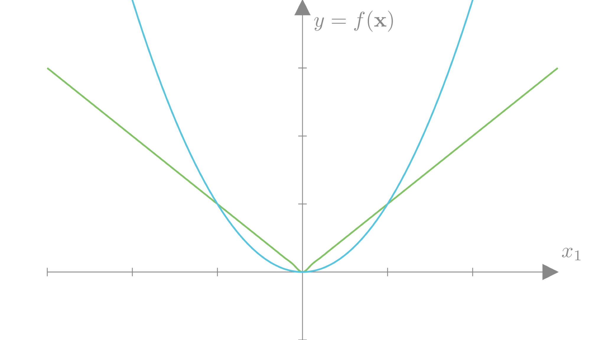
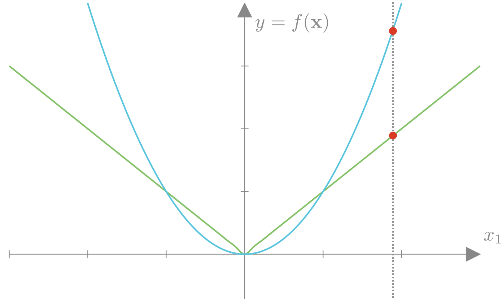
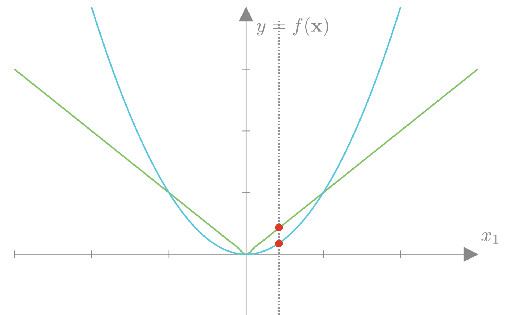
We see that the L2 loss strongly penalizes weights far from 0 compared to the L1 loss. However, this penalty decays quadratically towards 0, so weights close to 0 incur very little loss. The L1 loss decays linearly and thus more strongly penalizes weights that are already close to 0. Intuitively, this means that the L1 loss focuses on decreasing weights already close to 0 just as much as weights that are far from 0. This has the effect of encouraging sparsity, as the L1 loss can trade-off allowing some weights to be large if others go to exactly 0. The L2 loss encourages all weights to be reasonably small.
We can see the same distinction if we plot the L2 and L2 losses as a function of 2 weights:
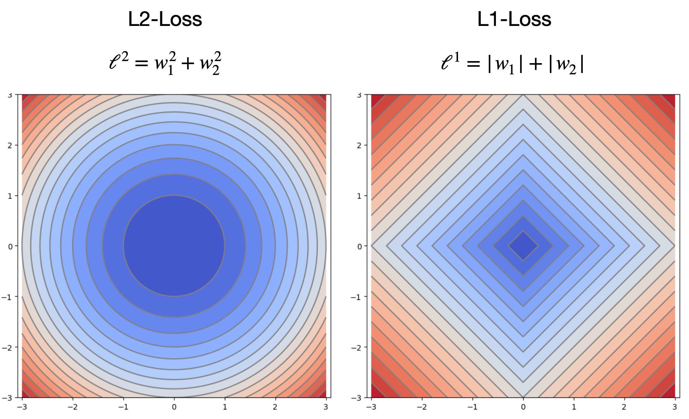
If we overlay a hypothetical MSE loss as a function of the two weights, we can get a sense of why the L1 loss encourages sparsity. For most curves of constant MSE, the point that minimizes the L1 loss falls at a point where one of the weights is exactly 0. If our L1 weight \((\lambda)\) is high enough, our overall minimum would fall at one of these points.
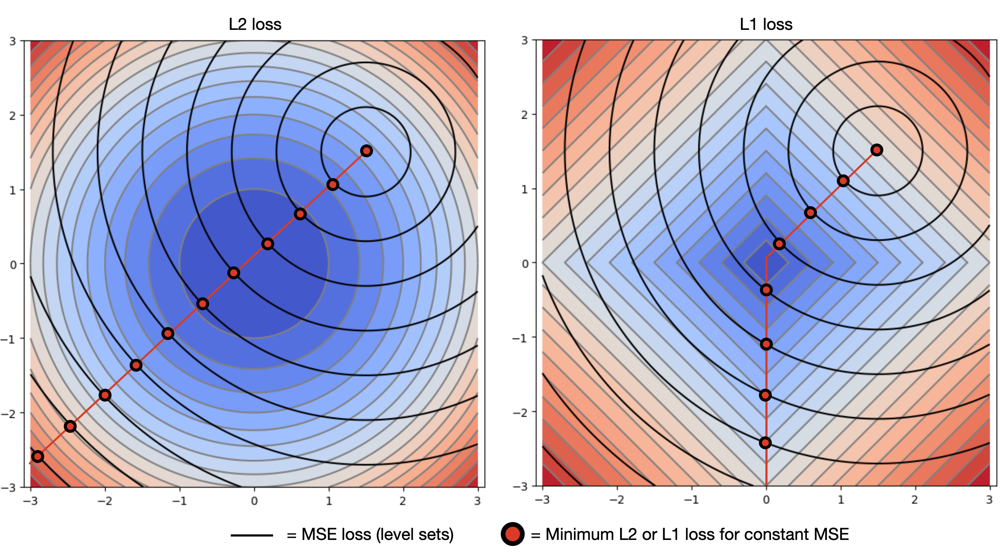
We can see the effect these two forms of regularization have on a real network.
L2 Regularization encourages all weights to be small.
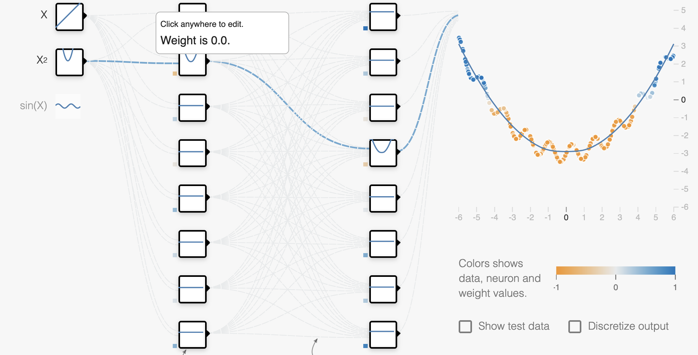
L1 Regularization encourages all but the most relevant weights to go to 0.
Dropout Regularization
Dropout
Another way to think about overfitting is through Interdependency. In order to capture small scale variations in our data, our network needs to dedicate many complex connections to capturing these specific variations. Another effective and popular form of regularization is dropout which purposefully breaks connections at training training time in order to encourage the network to learn reduce reliance on single specialized neurons and create redundancy.
As shown in this figure from the original dropout paper, dropout randomly removes neurons from the network at each step of training, performing the update with respect to this new randomized network.

The probability that any given neuron is removed is called the dropout rate \(r\). Mathematically, we can view dropout as a randomized function that is applied to the input of each layer. This function performs an element-wise multiplication \((\odot)\) of the input \(\mathbf{X}\) with a random matrix \(\mathbf{D}\) of 1’s and 0’s, where \(p(d_{ij}=0)=r\).
\[\text{Dropout}(\mathbf{X}, r) = \mathbf{D} \odot \mathbf{X}, \quad \mathbf{D} =
\begin{bmatrix}
d_{11} & d_{12} & \dots & d_{1n} \\
d_{21} & d_{22} & \dots & d_{2n} \\
\vdots & \vdots & \ddots & \vdots \\
d_{m1} & d_{m2} & \dots & d_{mn}
\end{bmatrix},\ d_{ij} \sim \text{Bernoulli}(1-r)\]
We can shorten \(\text{Dropout}(\mathbf{X}, r)\) to \(\text{DO}_r(\mathbf{X})\). With this we can write a network layer with sigmoid activation and dropout as:
\[ \phi(\mathbf{x}) = \sigma(\text{DO}_r(\mathbf{x})^T\mathbf{W} + \mathbf{b}) \]
A network with several dropout layers would have a prediction function defined as:
\[f(\mathbf{x}, \mathbf{w}_0,...) = \text{DO}_r(\sigma( \text{DO}_r(\sigma( \text{DO}_r(\sigma(\text{DO}_r( \mathbf{x})^T \mathbf{W}_2 + \mathbf{b}_2))^T \mathbf{W}_1 + \mathbf{b}_1))^T \mathbf{w}_0 + \mathbf{b}_0\]
Or more simply as a sequence of operations:
\[ \mathbf{a} = \sigma(\text{DO}_r(\mathbf{x})^T\mathbf{W}_2 + \mathbf{b}_2) \]
\[
\mathbf{b} = \sigma(\text{DO}_r(\mathbf{a})^T\mathbf{W}_1 + \mathbf{b}_1)
\]
\[
\mathbf{f} = \text{DO}_r(\mathbf{b})^T\mathbf{w}_0 + b_0
\]
The randomness introduced by dropout will cause our prediction function to be noisy. By dropping out different neurons at each step, we get different prediction functions from the same weights:


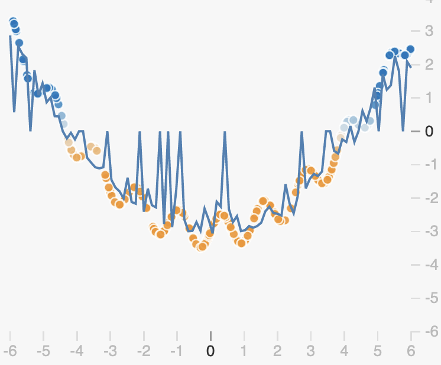
If we average all these networks however, we get something quite smooth, with redundancies in the predictions made by each neuron:
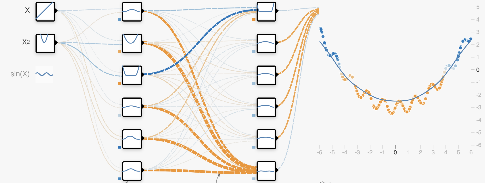
We can see from this example that unlike L2 and L1 regularization, dropout doesn’t enforce that weights should be small. Rather it encourages redundancy in the network, preventing neurons from becoming co-dependent.
Dropout at evaluation time
When we’re evaluating our model or trying to make predictions on new data, we likely don’t want our prediction function to be noisy. As we can see in the examples above, applying dropout can lead to poor predictions if we’re unlucky. A simple approach might just remove the dropout functions at evaluation time:
\[ \phi(\mathbf{x})_{train} = \sigma(\text{DO}_r(\mathbf{x})^T\mathbf{W} + \mathbf{b}) \quad \rightarrow \quad \phi(\mathbf{x})_{eval} = \sigma(\mathbf{x}^T\mathbf{W} + \mathbf{b}) \]
However this has a problem! To see why consider the expected value of a linear function with dropout:
\[ \mathbb{E}[ \text{DO}_r(\mathbf{x})^T\mathbf{w}] = \sum_i d_i x_i w_i, \quad d_i \sim \text{Bernoulli}(1-r) \]
\[ = \sum_i p(d_i=1) x_i w_i = (1-r)\sum_i x_i w_i < \sum_i x_i w_i \]
If \(r=0.5\) (the value suggested by the original dropout inventors), then on average the output of our function with dropout will only be half as large as the function without dropout! If we simply get rid of the dropout functions, the scale of our predictions will be way off.
A simple solution is to simply define dropout at evaluation time to scale the output according to the dropout rate. So at evaluation time dropout is defined as:
\[ \text{Dropout}_{eval}(\mathbf{X}, r) = (1-r) \mathbf{X} \]
This gives use the smooth prediction function we’re looking for:
Dropout in PyTorch
In Pytorch, dropout is implemented as a module (or layer) as with the linear and activation layers we’ve seen previously. We can define a network with dropout very simply using the nn.Dropout module:
# 2 Hidden-layer network with dropout
model = nn.Sequential(nn.Dropout(0.5), nn.Linear(2, 10), nn.ReLU(),
nn.Dropout(0.5), nn.Linear(10, 10), nn.ReLU(),
nn.Dropout(0.5), nn.Linear(10, 1)
)